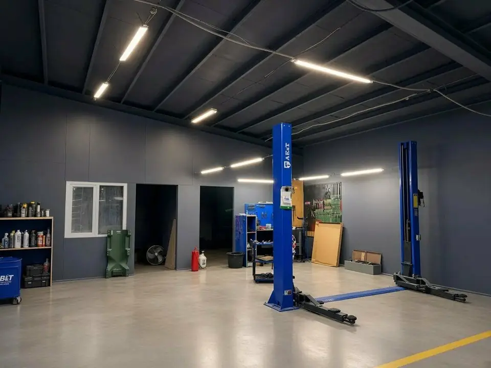
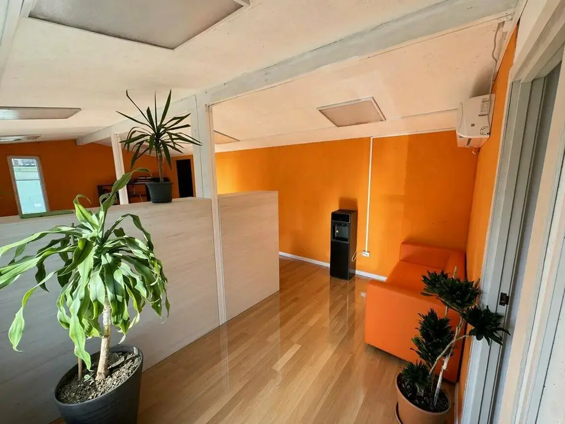
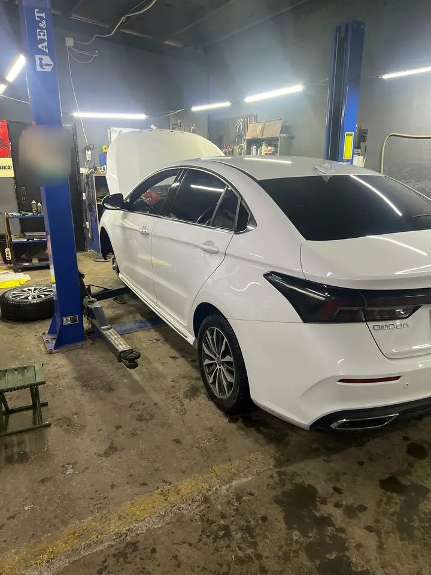
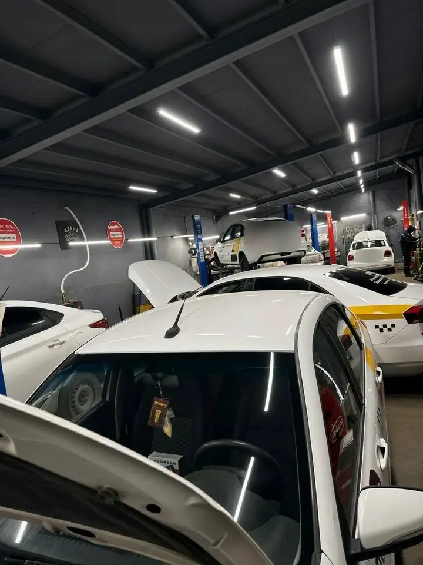
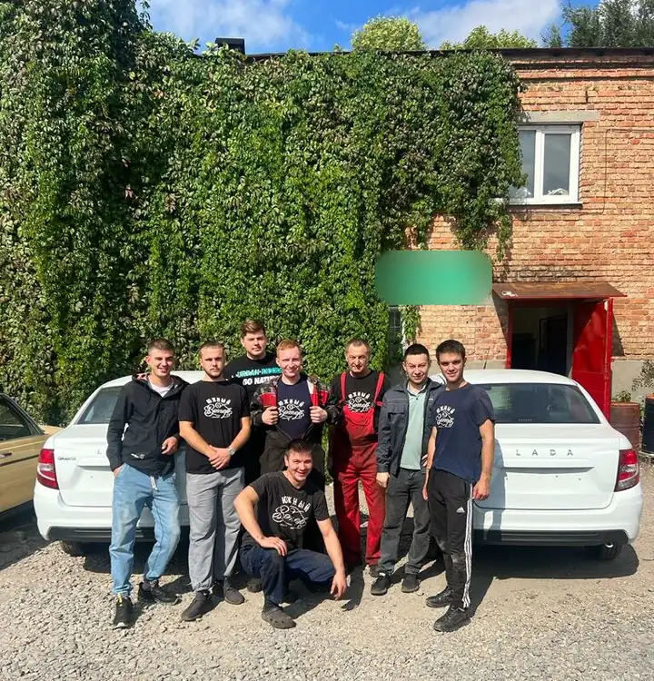

Ремонт двигателя и ходовой
Ремонт двигателя, ГРМ, сцепления и коробки передач, работа с подвеской и рулевым управлением, тормозной системой и выхлопом.

О сервисе
Южный Ветер – автосервис на Университетском переулке. Мы обслуживаем легковые автомобили разных марок, в том числе китайские и корейские, и работаем с коммерческим транспортом.
Возле сервиса есть парковка, внутри – Wi-Fi. Можно приехать с питомцем. Оплатить работу можно картой, наличными, переводом или по СБП.
Услуги
Университетский пер., 131АПн–Пт 09:00–19:00, Сб 10:00–17:00
Ремонт двигателя и ходовой, автоэлектрика и компьютерная диагностика, ТО, кузовной ремонт и шиномонтаж. Запишитесь заранее – по телефону или в Max.






Ремонт двигателя, ГРМ, сцепления и коробки передач, работа с подвеской и рулевым управлением, тормозной системой и выхлопом.
Компьютерная диагностика, ремонт генератора и стартера, автоэлектрика и электроника.
Плановое ТО: замена масла и фильтров, антифриза и тормозной жидкости.
Заправка и ремонт автомобильного кондиционера.
Кузовной ремонт и покраска, ремонт пластиковых бамперов, шиномонтаж с балансировкой.
Запчасти под заказ и проверка автомобиля перед покупкой.
| Замена масла | от 500 ₽ |
|---|---|
| Диагностика двигателя | от 500 ₽ |
| Замена антифриза | от 400 ₽ |
| Замена тормозной жидкости | от 800 ₽ |
| Замена ремня ГРМ | от 1200 ₽ |
| Замена цепи ГРМ | от 5000 ₽ |
| Ремонт двигателя | от 8000 ₽ |
| Ремонт генератора | от 800 ₽ |
| Ремонт стартера | от 1000 ₽ |
| Заправка кондиционера | от 1500 ₽ |
| Шиномонтаж (сезонная перекидка 4-х колес) | от 1800 ₽ |
| Проверка автомобиля перед покупкой | от 1000 ₽ |

Заезжал недавно на Шкоде, очень быстро обслужили, качественно, цена супер. Приемщик по телефону на голос лет 20,но подробно рассказал о моей проблеме и помог найти решение. Записал на два часа, загнали сразу же. Спасибо Андрею, Ренату, Владимиру и Тимофею, профессионалы своего дела👍
Обращался по проблеме, которую не могли решить несколько автосервисов. Ребята оперативно записали на диагностику и в тот же день все сделали. Качеством работы доволен. Общение и мастерство на уровне.
Отличный сервис,отличные механики, руководство. Спасибо Ренату и Тимофею за организованность,всегда запчасти имеются в наличии и найдут поломку всё быстро и качественно.Рекомендую.
Спасибо ребятам за помощь, вошли в положение и быстро все сделали, успел в поездку. Могу точно советовать, не часто можно встретить норм спецов еще и с человеческим отношением!
Приезжал к ребятам с горящим чеком и проблемами с электроникой для проведения диагностики. Помогли разобраться во всем, при этом не взяв ни копейки! Рекомендую сервис всем! Выполняют широкий профиль работ, персонал отзывчивый, приятно иметь дело!
Читать отзывы на Яндекс Картах
Ростов-на-Дону, Университетский пер., 131А
Мы находимся в Кировском районе Ростова-на-Дону, на Университетском переулке.
Позвоните или напишите нам в Max – договоримся о времени визита.